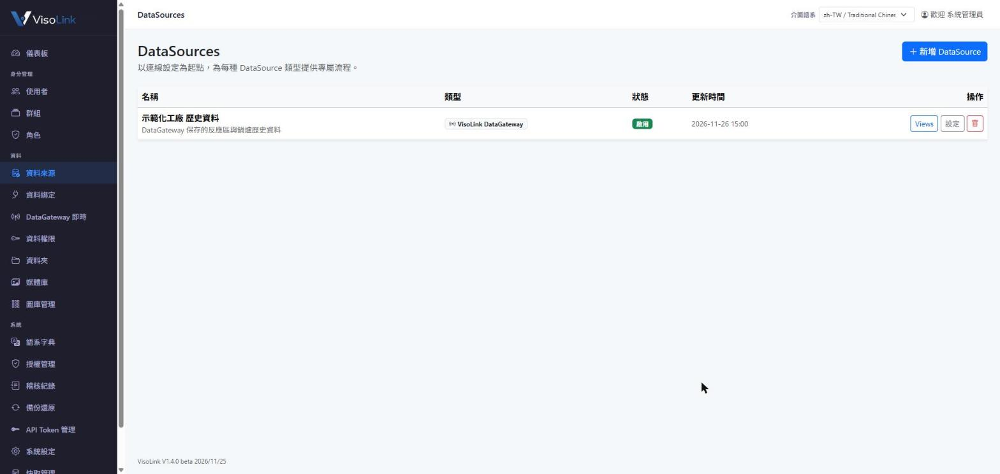
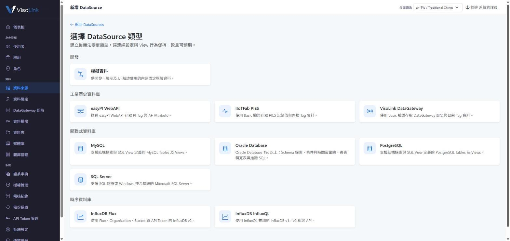
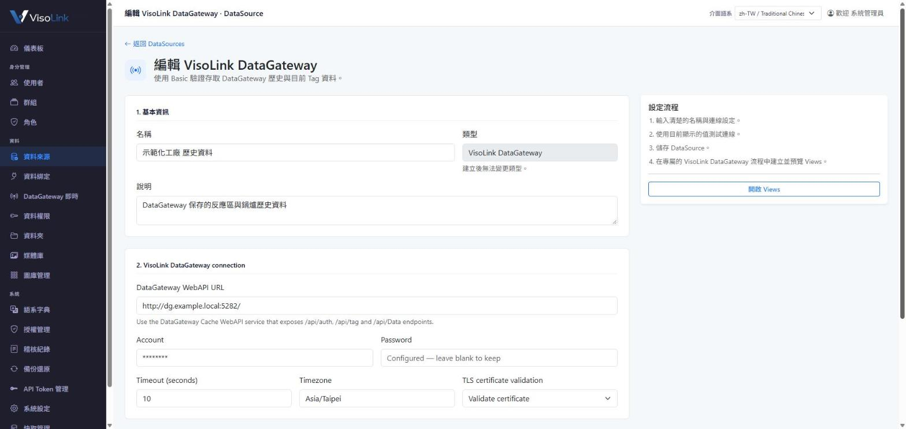
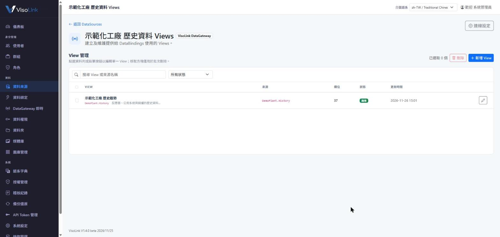
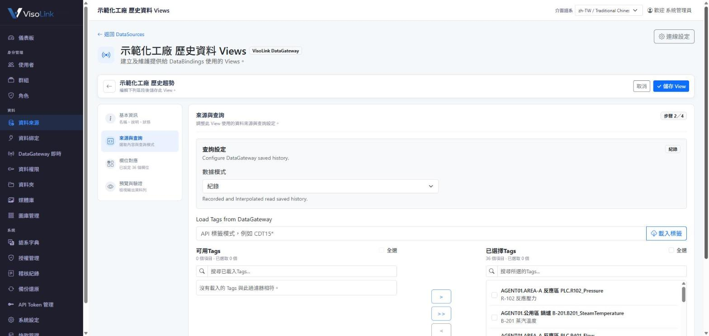

DataSource 資料來源與 View
DataSource 負責連接外部資料系統；View 將來源整理為 DataBinding 可以安全引用的資料結構。關聯式資料庫（Oracle、MySQL、PostgreSQL、SQL Server）採引導式建立；VisoLink DataGateway 用來讀取 DataGateway 保存的歷史資料。
瀏覽 DataSource 清單

- 點選左側「資料 → 資料來源」。
- 依名稱、類型與狀態找到來源。
- 點「設定」修改連線，或點「Views」維護這個來源的 View。
建立 DataSource 與選擇類型

| 分組 | 類型 |
|---|---|
| 開發 | 模擬資料（內建固定模擬資料，供開發、展示與畫面驗證） |
| 工業歷史資料庫 | easyPI WebAPI、IIoTFab PIES、VisoLink DataGateway |
| 關聯式資料庫 | MySQL、Oracle Database、PostgreSQL、SQL Server |
| 時序資料庫 | InfluxDB Flux、InfluxDB InfluxQL |
- 在資料來源清單點選「新增 DataSource」。
- 在「選擇 DataSource 類型」點選對應卡片。
- 進入該類型專屬的設定頁；關聯式資料庫會進入引導式建立。
建立後不能變更類型；選錯時應建立正確類型並完成 View／DataBinding 移轉。DataGateway 的「即時值與回寫」不在這裡設定，請見 DataGateway 即時。
設定 DataSource 連線
- 輸入名稱與說明。
- 依類型填寫主機、資料庫、Organization、Bucket、API 位址或驗證方式等必要欄位。
- 密碼與 Token 只輸入在受保護欄位，不放入說明；已設定的密碼不會回填，留白代表沿用。
- 設定是否啟用，但先不要在未測試時投入正式使用。
欄位差異：各類型的必要欄位不同，以目前畫面標示為準。
引導式建立關聯式資料庫
Oracle Database、MySQL、PostgreSQL、SQL Server 採四步驟引導建立：「選擇類型 → 連線設定（測試後儲存）→ 第一個 View（可稍後再設定）→ 完成（前往 DataBinding 或工作區）」。每一步結束就實際儲存；中途離開時，已完成的部分會保留在維護工作區。

- 在類型頁點選關聯式資料庫卡片。
- 步驟 2「連線設定」：填寫基本資料、資料庫位置、驗證方式與傳輸加密。
- 點「測試連線」，確認成功後點「儲存並繼續」。未測試成功仍可儲存，但 View 會暫停設定。
- 步驟 3「第一個 View」：選擇查詢模式並完成 View；也可以點「稍後再設定」。
- 步驟 4「完成」：點「建立 DataBinding」直接帶入這個 DataSource 與 View，或前往維護工作區。
| View 查詢模式 | 用途 |
|---|---|
| 標準選取 | 選 Table／View、欄位、條件與彙總；保存設定，執行時產生 SQL。 |
| 長表轉寬表（Tag Pivot） | 把「點位、時間、數值」長表轉成一個點位一個欄位。 |
| 進階 SQL | 自行撰寫 SELECT／WITH；保存 SQL 原文，不拆解。 |
資料結構設計指南：不確定資料表適不適合時序查詢時，在 View 編輯畫面點「資料結構設計指南」查看建議的表格設計。資料查詢一律以唯讀方式執行。
Oracle Database 連線設定
支援 Oracle Database 19c、21c、23ai、26ai（不支援 18c、12c、11g、10g 及更早）；測試連線時自動偵測版本，連線成功且版本支援後才可設定 View。內建驅動，不需要另外安裝 Oracle Client。
- ① 資料庫位置
- 連線方式可選 Easy Connect（主機＋Port＋Service Name，建議）、主機＋Port＋SID、Easy Connect Plus、完整連線描述（Connect Descriptor）或 TNS 別名（貼上 tnsnames.ora）。另設「資料庫時區」與「連線逾時（秒）」；Oracle 的 DATE、TIMESTAMP 不含時區，查詢時間範圍與「日」時間窗都依資料庫時區換算。
- ② 驗證方式
- 帳號密碼（建議使用唯讀帳號）、Proxy 驗證、Wallet 儲存帳密。密碼、Wallet 等秘密設定加密保存，不會回填到畫面。
- ③ 傳輸加密
- 不加密、Oracle 原生網路加密、TLS（TCPS）驗證伺服器憑證、TLS（TCPS）雙向驗證。依資料庫端的設定選擇。
- 選擇 DBA 提供的連線方式並填入對應欄位。
- 選擇驗證方式並輸入帳號資訊。
- 選擇傳輸加密方式。
- 點「測試連線」，畫面顯示偵測到的版本後點「儲存並繼續」。
變更位置、驗證或加密後，需要重新測試連線。
VisoLink DataGateway 歷史資料
「VisoLink DataGateway」類型使用 Basic 驗證讀取 DataGateway 保存的歷史資料與目前 Tag 資料，供趨勢、表格等歷史查詢使用。DataGateway 端的位址與帳密在 DG 總覽「加值開發 WebAPI」卡片取得（見 DataGateway 手冊）。

- 在類型頁點選「VisoLink DataGateway」。
- 輸入名稱與說明。
- 填寫 DataGateway WebAPI URL（例如
http://<DG 位址>:5282/）、Account 與 Password。 - 視需要調整 Timeout (seconds)、Timezone 與 TLS certificate validation。
- 點「測試連線」，成功時顯示連線成功與 DataGateway 版本。
- 點「建立並設定 Views」，同時儲存 DataSource 並進入 View 精靈。
即時與歷史的分工：這裡設定的是歷史資料讀取。要在畫面顯示 DG 的即時值或回寫設備，請另外設定 DataGateway 即時。
測試 DataSource 連線
- 完成連線欄位後點選「測試連線」。
- 等待成功或失敗訊息。
- 失敗時依序檢查位址、連接埠、驗證資料、網路及來源服務。
- 測試成功後再儲存。
啟用與停用 DataSource
啟用後可供 View 與 DataBinding 使用；停用後 View 與 DataBinding 都不會查詢此來源，既有 Runtime 元件會顯示無資料。
- 開啟 DataSource 設定頁。
- 切換「啟用此 DataSource」。
- 儲存後檢查清單狀態。
- 停用前先盤點相關 View、DataBinding 與 Display。
編輯與刪除 DataSource
- 在清單點「設定」並修改允許的設定（類型不可變更）。
- 測試連線後儲存。
- 要刪除時先確認 View、DataBinding 與 Display 相依關係。
- 完成移轉後在清單點刪除圖示，於確認視窗確認。
建議：排查問題時先停用，不要直接刪除仍被引用的來源。
維護工作區與 SQL Console
關聯式資料庫建立後，從清單點「設定」或「Views」會進入「維護工作區」。工作區分成「概覽、連線設定、Views、SQL Console」頁籤，可自由切換，不需依步驟操作。
- 「概覽」：查看連線狀態、View 數量、待辦事項；可「重新測試連線」。
- 「連線設定」：修改連線後重新測試並儲存。
- 「Views」：新增、編輯 View，並查看每個 View 被哪些 DataBinding 使用；有「建立 DataBinding」可直接帶入。
- 「SQL Console」：以唯讀方式試跑查詢，確認資料內容。
連線尚未驗證成功時，View 相關功能會鎖定；修改 View 前先看使用關聯，避免影響既有 DataBinding。
瀏覽 View 清單
從 DataSource 的 Views 進入，查看對外提供的查詢定義、欄位與狀態。

- 在 DataSource 清單點選 Views。
- 確認 View 名稱、來源、欄位數與狀態。
- 選擇新增 View、編輯或刪除。
已找到正確 View，並確認名稱、來源、欄位數與啟用狀態。
建立與編輯 View
View 編輯分成四段：「基本資訊、來源與查詢、欄位對應、預覽與驗證」。新增時依序完成；編輯時可直接點左側任一段修改，最後點「儲存 View」。
- 點選「新增 View」，或在清單點鉛筆開啟既有 View。
- 「基本資訊」：輸入顯示名稱、來源名稱（建立後無法變更）與說明，並開啟「啟用供 DataBindings 使用」。
- 依左側流程完成來源、欄位與預覽。
- 確認後點「儲存 View」。
選擇 View 資料來源
不同 DataSource 類型可選擇 Table、View、Tag、AF Attribute、Measurement 或 API 資源。以 VisoLink DataGateway 為例，先選數據模式，再從 DataGateway 載入 Tag。

- 在 View 編輯畫面點「來源與查詢」。
- VisoLink DataGateway：選擇數據模式（紀錄／內插），輸入 Tag 樣式（
*為全部，空白不會載入）後點「載入標籤」。 - 從「可用Tags」勾選後按「>」，或「>>」加入全部篩選結果。
- 其他類型：搜尋並選取 Table／View 或對應資源，確認時間欄位。
設定 View 查詢
依類型使用查詢建構器、SQL Console 或專屬設定。只查詢使用者被授權且必要的資料。
- 設定篩選、時間條件或查詢內容；關聯式資料庫可選標準選取、長表轉寬表或進階 SQL。
- 限制不必要的資料量。
- 執行驗證，修正語法或來源錯誤。
- 確認查詢不包含敏感常數或憑證。
設定 View 欄位映射
- 在「欄位對應」逐列檢查每個欄位。
- 設定顯示名稱與單位；型別依來源固定顯示。
- 確認時間欄位與必要 Metadata。
- 避免同名欄位與錯誤型別。
預覽與驗證 View
- 在「預覽與驗證」設定預覽的開始與結束時間（只用於本次預覽，不存入 View）。
- 點「執行預覽」載入樣本。
- 確認欄位名稱、型別、時間與數值；各 Tag 時間點不同時，表格會有空格。
- 結果正確後儲存 View，並在 DataBinding 中使用。
預期結果：View 提供穩定且可辨識的欄位，DataBinding 不需要直接處理底層連線細節。
預覽顯示「此 View 未傳回任何欄位」時，表示所選時間範圍內沒有資料；請放寬時間範圍或確認來源端是否有保存資料。